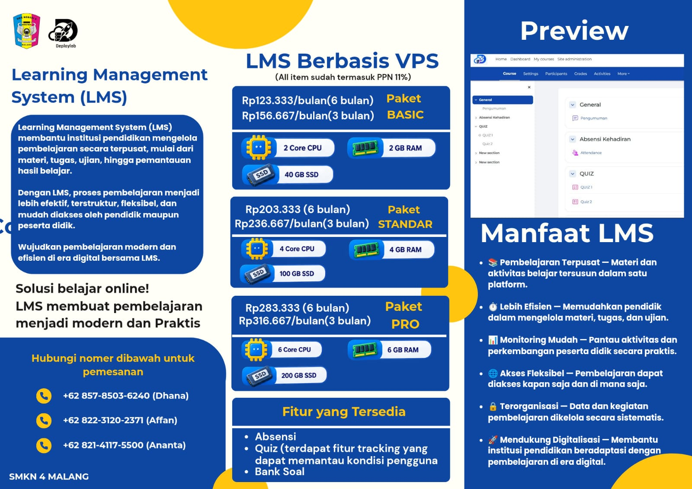
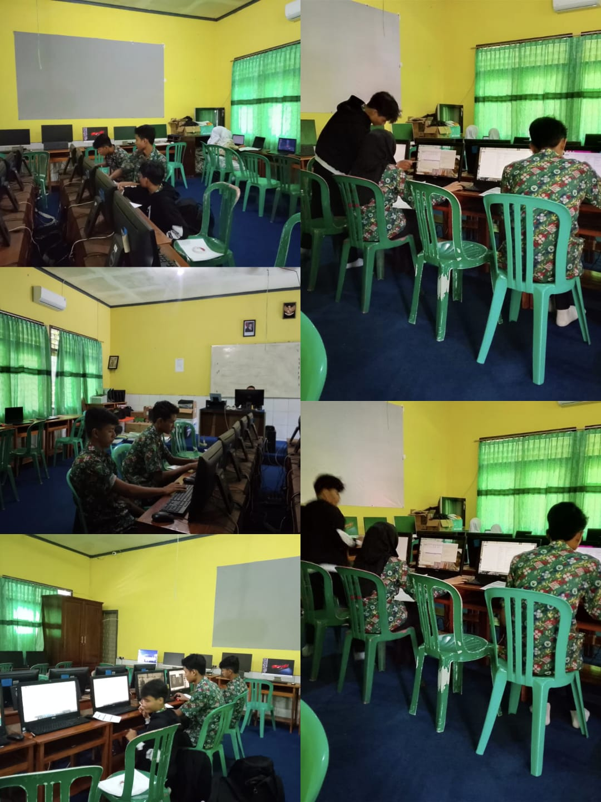
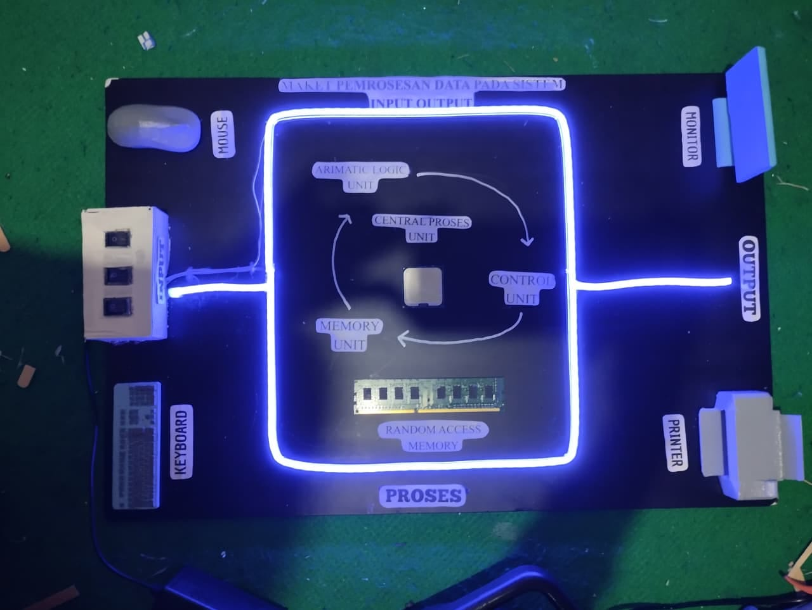

Konfigurasi Dasar Mikrotik
Mengatur pengaturan router MikroTik, seperti IP address, DHCP server, dan koneksi internet melalui Winbox.
Halo, saya
Saya merupakan siswa jurusan Teknik Komputer dan Jaringan (TKJ) di SMK Negeri 4 Malang yang memiliki ketertarikan pada bidang teknologi informasi, khususnya jaringan komputer, perawatan perangkat komputer, konfigurasi Mikrotik Dasar.
Saya siswa jurusan Teknik Komputer dan Jaringan (TKJ) di SMK Negeri 4 Malang. Saya memiliki minat dan ketertarikan di bidang teknologi, terutama jaringan komputer, dan perawatan komputer. Saya sudah mempelajari dasar instalasi sistem operasi, pengaturan jaringan, serta perbaikan masalah pada komputer. Saya juga terbiasa bekerja sama dalam tim, teliti dalam mengerjakan tugas, dan memiliki semangat untuk belajar hal baru serta menambah pengalaman di dunia kerja.
Mengatur pengaturan router MikroTik, seperti IP address, DHCP server, dan koneksi internet melalui Winbox.
Menginstal Windows dan Linux, mulai dari membuat bootable USB, mempartisi disk, hingga memasang driver dan aplikasi dasar.
Membuat kabel LAN straight dan crossover sesuai standar T568A/T568B, lalu mengujinya dengan LAN tester.
Menyusun jaringan lokal dengan switch dan router, mengatur IP address, serta memastikan antarperangkat saling terhubung.
Membersihkan, mengganti komponen, dan menganalisa kerusakan agar perangkat kembali berfungsi optimal.

Instalasi dan konfigurasi sistem operasi pada VPS. Mengatur server dan instalasi moodle untuk LMS (Learning Management System).

KMelakukan perawatan dan pengecekan komputer di laboratorium sekolah. Mengoptimalkan komputer di laboratorium sekolah.

Membuat maket yang menggambarkan cara kerja sistem komputer. Mengenalkan proses input, pengolahan data (process), dan output.
Teknik Komputer dan Jaringan (TKJ)
Mempelajari dasar jaringan komputer, perawatan dan perbaikan perangkat, serta instalasi sistem operasi Windows dan Linux.
Terima kasih sudah mengunjungi portofolio saya. Saya ingin terus belajar, dan mengembangkan kemampuan di bidang teknologi terutama jaringan komputer.